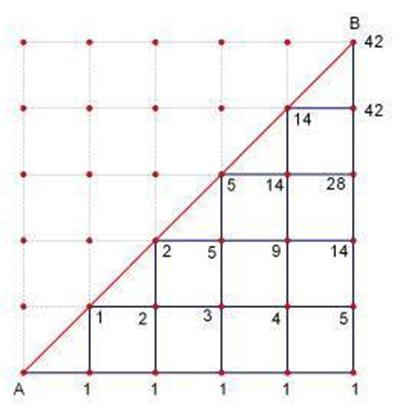

卡特兰数
本文最后更新于 2024年7月16日 凌晨
知识前置
排列组合
详见OI-Wiki，后面会出一篇文章专门讲。
栈
先进先出的数据结构，详见OI-WIki。
二叉搜索树
左子树点权均小于根节点，右子树点权都大于根节点的二叉树。
它有很多好的性质，详见OI-Wiki。
解决问题
以下问题的答案都可以用 $\text{Catalan}$ 数 $H_n$ 表示。
一、进出栈问题
一个容量无穷大的栈，若进栈序列为 $1,2,3,\dots,n$，求共有多少种不同的出栈序列。
进一步，这个问题可以扩展为：
给定 $n$ 对括号，求合法配对的序列数。
二、凸多边形三角划分问题
在凸 $n$ 变形中，连接 $n-3$ 对不相邻顶点，使原多 $n$ 边形划分为 $n-2$ 个三角形，求划分方案数。
进一步，这个问题可以扩展为：
在圆上选择 $2n$ 个点，求使用 $n$ 条不相交线段连接这些点的方案数。
三、二叉树
给定 $n$ 个有不同序号的节点，求能构成的不同的二叉搜索树的个数。
或，给定 $n$ 个无序号节点，求能构成的不同的二叉树的个数。
四、矩阵路径问题
在大小 $n\times n$ 的矩阵中，从起点 $(0,0)$ 走到终点 $(n,n)$，且不可走到对角线 $y=x$ 上方，求不同的路径条数。

定义
设 $H_n$ 表示 $\text{Catalan}$ 数列中的第 $n$ 项，则有：
$$
\begin{array}{ccccccc}
H_0&H_1&H_2&H_3&H_4&H_5&H_6\\
\hline 1&1&2&5&14&42&132
\end{array}
$$
满足递推式及通项公式：
$$
\begin{gathered}
H_0=1, H_1=1,\ H_{n+1}=\sum_{i=0}^nH_i\times H_{n-i}\\
H_n=\frac{\begin{pmatrix}2n\\n\end{pmatrix}}{n+1}
\end{gathered}
$$
其他公式
$$
\begin{align}
H_n=\frac{H_{n-1}(4n-2)}{n-1}\\
H_n=\begin{pmatrix}2n\\n\end{pmatrix}-\begin{pmatrix}2n\\n-1\end{pmatrix}
\end{align}
$$
一般地，在程序设计中，通常使用公式 $H_n=\frac{H_{n-1}(4n-2)}{n-1}$，而手算通常采用公式 $H_n=\frac{\begin{pmatrix}2n\\n\end{pmatrix}}{n+1}$。
例题
洛谷P1044 栈
题目描述
一个容量无穷大的栈，若进栈序列为 $1,2,3,\dots,n$，求共有多少种不同的出栈序列。
代码
AC 680.00KB 15ms
1 | |
总结
注意事项：$\text{Catalan}$ 数列的前 $6$ 项 $1,2,5,14,42,132$ 在考 $\text{CSP-J1/S1}$ 前是要背过的。
在赛场上，不论是初赛还是复赛，你都不一定能看得出一道题是卡特兰数。
遇到排列组合题目，如果普通方法算不出来，优先往上面四种基本模型上套，看看是不是卡特兰数。